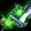
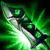

Riven a exilada
Skills

LÂMINA RUNICA

ASAS QUEBRADAS

EXPLOSÃO DE KI

VALENTIA

LÂMINA DO EXÍLIO
Historia
Outrora mestra das espadas nos esquadrões de Noxus, agora Riven é uma expatriada em uma terra que um dia já tentou conquistar. Depois de alcançar os altos escalões do exército usando a força de sua convicção e sua brutal eficiência, ela foi recompensada com uma lâmina rúnica lendária e sua própria milícia. No entanto, no fronte ioniano, a fé de Riven em sua terra natal foi testada e, no fim, quebrada. Tendo cortado todos os laços com o império, agora ela busca seu lugar em um mundo devastado, mesmo diante de rumores de que a própria Noxus passou por uma transformação...
fonte: League of Legends